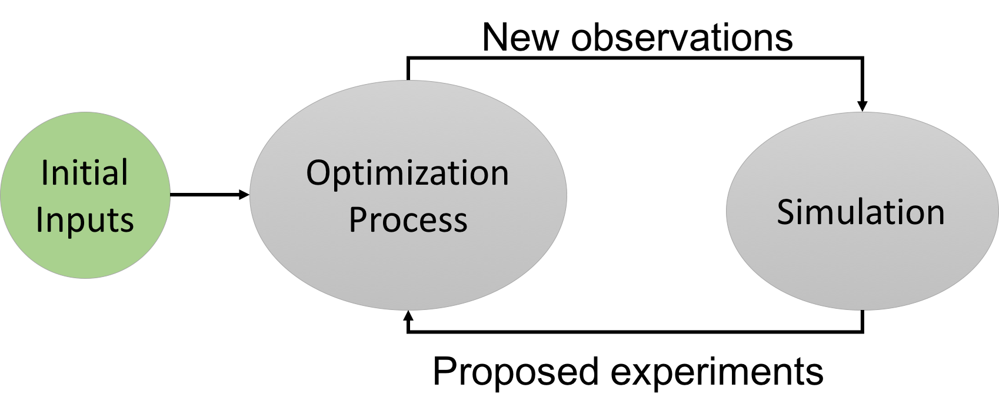

Initial Observations
In this step, enter the initial observations of your system in the following fields:
- Observed Inputs and Observed Outputs: Enter your observed inputs and outputs in a tuple form (e.g. "(0.3,0.4),(0.4,0.5)" for 2 variables and 2 observations for each variable)
- Lower Input Bounds and Upper Input Bounds: Enter the lower and upper bounds of the inputs in a tuple form (e.g. "0,0" and 1,1" for 2 variables, both with a lower bound of 0 and an upper bound of 1)
- Number of Iterations: Enter the maximum number of iterations for the program
After entering all inputs, proceed to the next step
